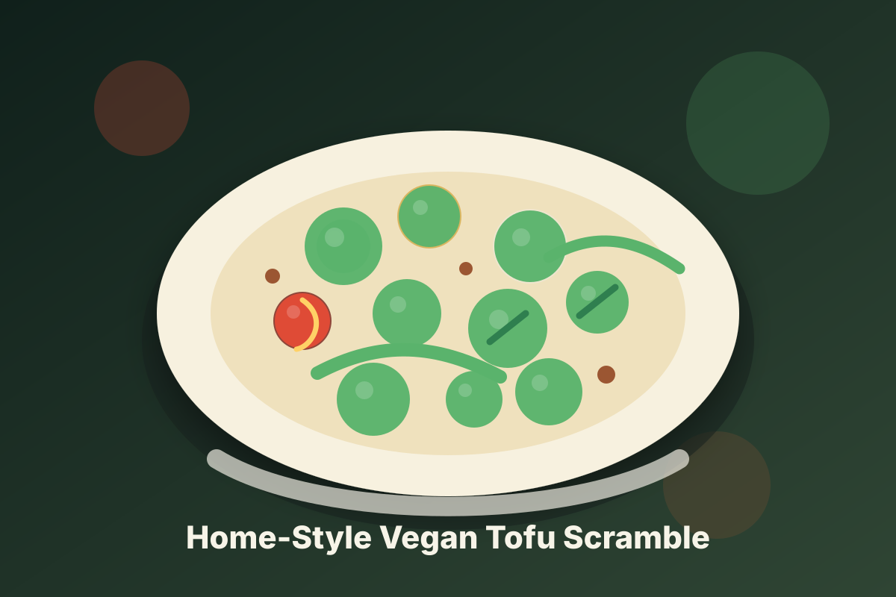

Home-Style Vegan Tofu Scramble
An original home-kitchen recipe inspired by Tofu Scramble, built around potatoes with the jamaican-inspired vegan comfort food feel and the qualities you liked: bold flavor and satisfying texture.
Fresco import links
Open a recipe and paste its public URL into Fresco or Instant Pot import.

An original home-kitchen recipe inspired by Tofu Scramble, built around potatoes with the jamaican-inspired vegan comfort food feel and the qualities you liked: bold flavor and satisfying texture.

A vegan jerk bowl built around tofu with appliance-friendly steps and Jamaican-inspired island seasoning.

A vegan Jamaican patties built around potatoes with appliance-friendly steps and bright island seasoning.
A vegan Jamaican recipe built around available ingredients and appliance-friendly cooking.
A vegan Jamaican staple built for weeknight cooking and appliance-friendly instructions.
A vegan Jamaican staple built for weeknight cooking and appliance-friendly instructions.
A vegan Jamaican staple built for weeknight cooking and appliance-friendly instructions.
A vegan Jamaican staple built for weeknight cooking and appliance-friendly instructions.
A vegan Jamaican staple built for weeknight cooking and appliance-friendly instructions.
A vegan Jamaican staple built for weeknight cooking and appliance-friendly instructions.